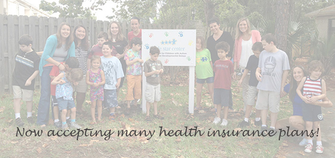

| What | When | Where |
|---|---|---|
| Fire and Ice | April 12, 2013 7:30pm-9:30pm |
SUITE Nightclub Jacksonville |
| HEAL Zoo Walk for Autism | April 21, 2013 7:30am-10:00am |
Jacksonville Zoo and Gardens |
Little Star Center is a private, non-profit school providing comprehensive, affordable, individual education and behavioral services for all who struggle with Autism Spectrum Disorders and other developmental delays.
Little Star Center places a strong emphasis on academics, behavior, and communication. These skills are taught using Applied Behavioral Analysis and Verbal Behavior. We utilize individual instruction, group instruction, and social skills training. Our ultimate goal is to prepare children with Autism and other developmental delays for a typical educational setting through intense training and small group sessions.